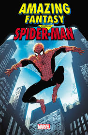
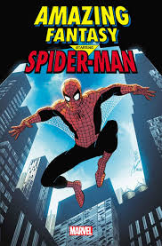

About
Spider-Man is a superhero appearing in American comic books published by Marvel Comics. Created by writer-editor Stan Lee and artist Steve Ditko, he first appeared in the anthology comic book Amazing Fantasy #15 (August 1962) in the Silver Age of Comic Books. He has been featured in comic books, television shows, films, video games, novels, and plays.
📰 Publication Info
- Publisher: Marvel Comics
- Created By: Stan Lee & Steve Ditko
- First Appearance: Amazing Fantasy #15
- Debut Year: 1962
Creation & Development
In 1962, with the success of the Fantastic Four, Marvel Comics editor and head writer Stan Lee was casting for a new superhero idea. He said the idea for Spider-Man arose from a surge in teenage demand for comic books and the desire to create a character with whom teens could identify. As with Fantastic Four, Lee saw Spider-Man as an opportunity to "get out of his system" what he felt was missing in comic books. In his autobiography, Lee cites the non-superhuman pulp magazine crime fighter the Spider as a great influence, and in a multitude of print and video interviews, Lee stated he was further inspired by seeing a spider climb up a wall — adding in his autobiography that he has told that story so often he has become unsure of whether or not this is true.
.jpeg) 
